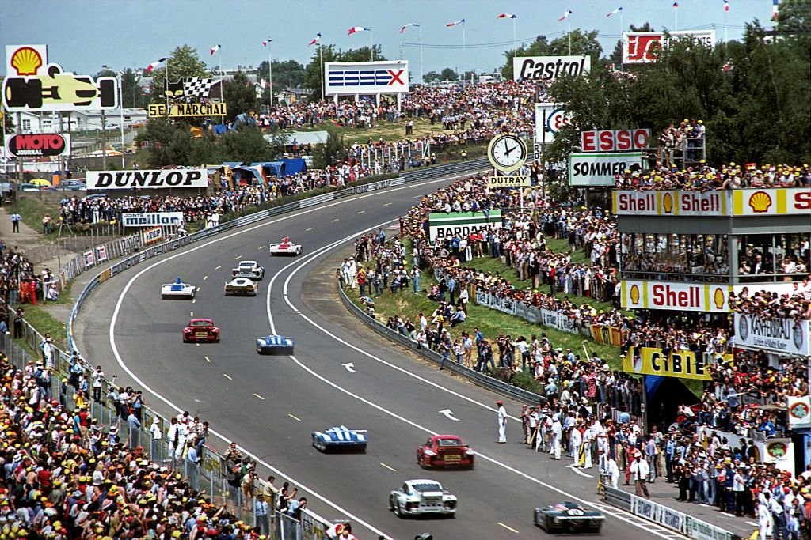
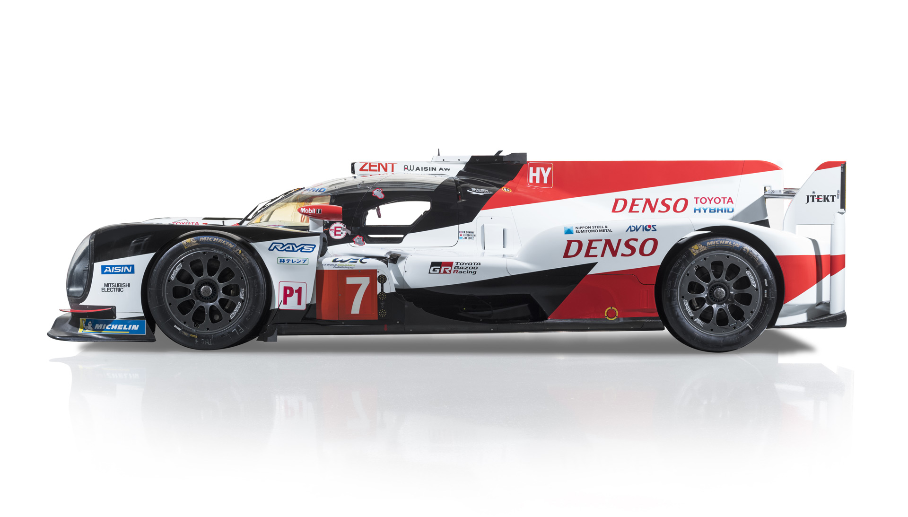
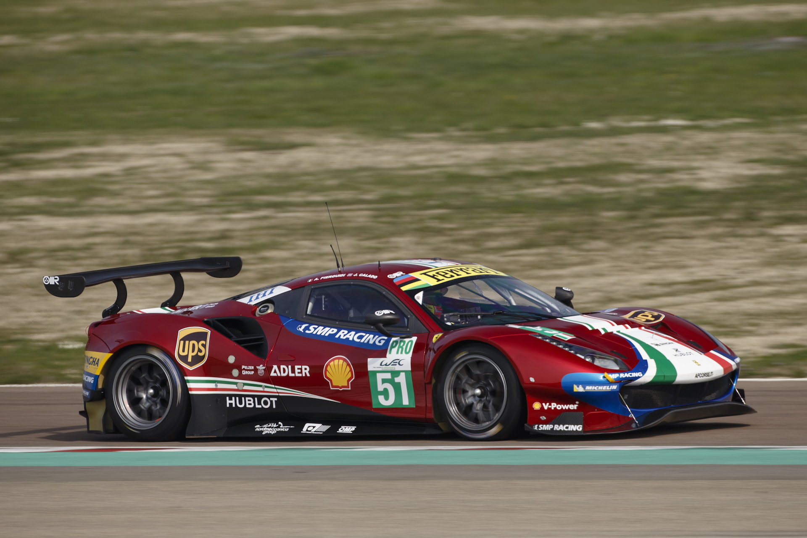
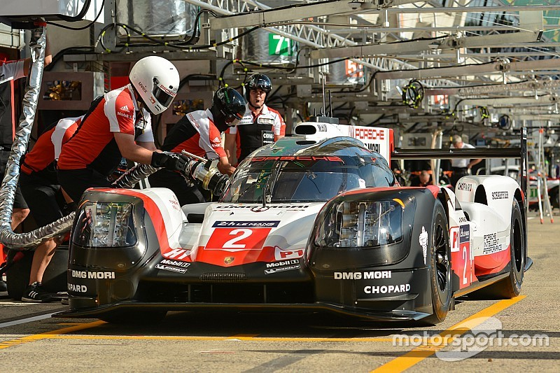
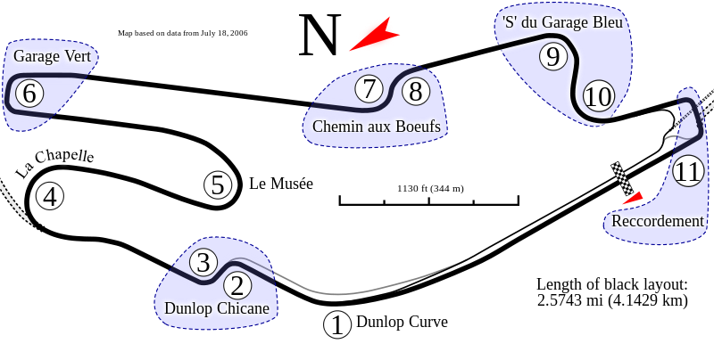
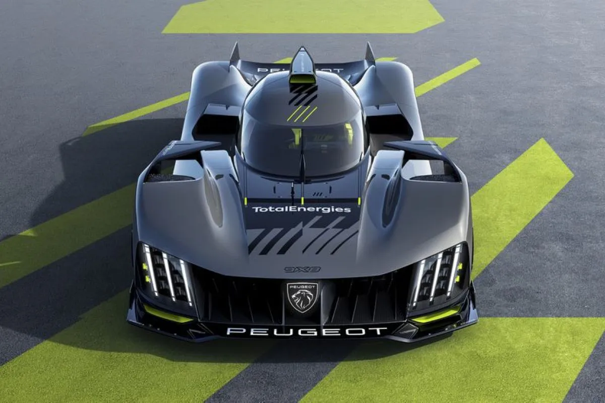

Balap Le Mans bukanlah balap singkat yang biasa kita saksikan dalam ajang balap lainnya. Durasinya selama 24 jam secara keseluruhan menjadikannya tantangan fisik dan mental yang luar biasa. Selama balap, peserta harus menghadapi perubahan kondisi cuaca yang mendadak, baik hujan deras maupun sinar matahari yang menyengat. Selain itu, tekanan mekanis dan fisik pada mobil dan pembalap cukup besar. Itu mengapa strategi manajemen waktu, perawatan kendaraan yang efisien, dan pengelolaan energi sangat penting dalam upaya untuk menyelesaikan balap ini.
Peserta Balap Le Mans terbagi menjadi dua kategori utama: Prototype Le Mans (LMP) dan Kendaraan GT (GTE). Kategori LMP menampilkan mobil balap prototipe yang dirancang khusus untuk balap ketahanan dengan teknologi canggih, sementara GTE menghadirkan mobil yang lebih mirip dengan mobil jalan sehari-hari dengan sedikit modifikasi. Ini berarti Anda akan melihat mobil balap yang sangat berbeda dalam hal desain, performa, dan karakteristik bersaing untuk mendapatkan peringkat tertinggi. Kombinasi dari dua jenis mobil yang sangat berbeda ini menciptakan dinamika balap yang menarik dan membuat balap ini menjadi tantangan taktis yang unik bagi tim dan pembalap.
 Kiri: LMP
Kanan: GTE
Membagi waktu mengemudi dalam Balap Le Mans adalah kunci keselamatan dan keberhasilan tim. Dalam balap yang berlangsung selama 24 jam, setiap pembalap harus mengemudi bergantian dan diberi batasan waktu maksimum di trek. Tidak ada pembalap yang diizinkan untuk mengemudi lebih dari 4 jam secara berturut-turut untuk menjaga konsentrasi dan kebugaran fisik mereka. Ini berarti bahwa manajemen waktu dan strategi rotasi pembalap adalah faktor yang sangat penting dalam upaya mencapai kemenangan. Tim harus memutuskan kapan waktu yang tepat untuk mengganti pembalap dan memastikan agar semua pembalap memiliki kesempatan yang setara di trek.
Balap Le Mans mungkin tidak memiliki kecepatan tertinggi yang sama dengan Formula 1, tetapi memiliki jarak yang jauh lebih panjang. Meskipun balap Formula 1 biasanya berlangsung selama sekitar dua jam dan mencakup sekitar 300-400 kilometer, pemenang Balap Le Mans mencakup jarak yang mencapai lebih dari 5.000 kilometer selama 24 jam. Jarak yang ditempuh oleh peserta Balap Le Mans tidak hanya menguji performa mobil, tetapi juga keterampilan strategi, perawatan kendaraan, dan daya tahan fisik dan mental pembalap. Balap ini adalah ujian sejati bagi kendaraan dan tim balap.
Balap Le Mans telah selalu menjadi wadah inovasi teknologi otomotif. Beberapa teknologi otomotif yang paling maju pertama kali diuji dalam balap ini sebelum diterapkan dalam mobil jalan. Contoh terkenal adalah penggunaan teknologi hibrida oleh beberapa tim, seperti Audi dan Toyota, dalam kategori LMP. Teknologi ini tidak hanya membuat mobil lebih efisien dalam hal konsumsi bahan bakar, tetapi juga meningkatkan performa. Keberhasilan teknologi ini di Le Mans telah memengaruhi perkembangan mobil konsumen, membantu memperkenalkan mobil listrik dan hibrida ke pasar massal serta menciptakan tren keberlanjutan di dunia otomotif.
